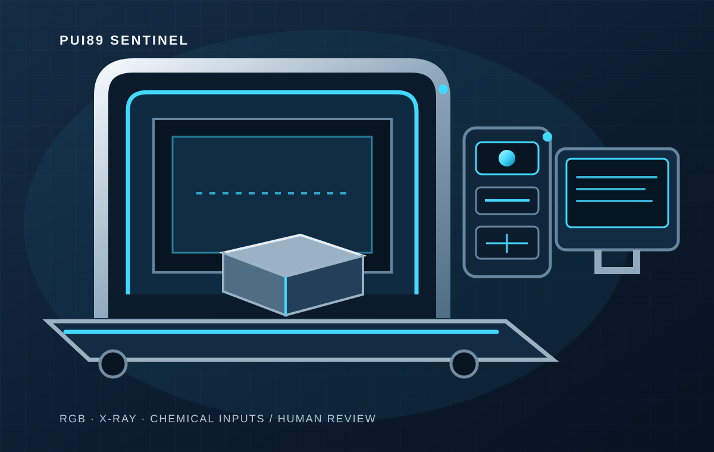

Visual context
Image-based observations for visible object context and reviewable visual cues, subject to image quality and lawful collection.
A proposed multimodal screening decision-support concept that brings complementary sensing inputs into one review workflow — designed to help trained people examine evidence, uncertainty and possible anomalies.

The concept explores how distinct sensing channels could contribute separate observations to a common evidence record. The system should expose what each sensor can and cannot support, rather than treating one model output as a final decision.
Image-based observations for visible object context and reviewable visual cues, subject to image quality and lawful collection.
Potential integration of authorised X-ray imaging data, with modality-specific limits and human interpretation retained.
Potential chemical-sensing inputs with calibration, environmental conditions, provenance and uncertainty recorded.
The shared foundation is intended to provide reusable evidence handling, model evaluation, uncertainty reporting, safe failure behaviour and human-review interfaces. Integration status varies by component and is documented separately.